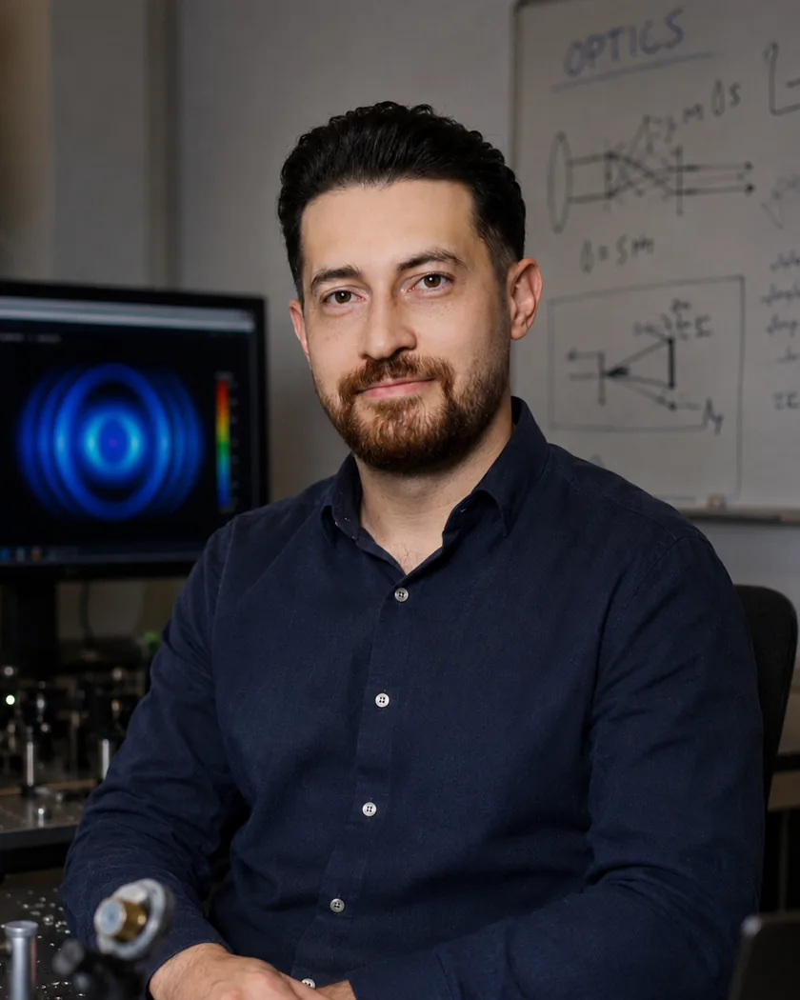

A polystyrene bead held in the trap while other particles drift past. Recorded on our optical tweezers setup at IASBS.
Javid Farazin
I build optical tweezers setups and write the software that runs them. Most of my work sits between the optical table and the code.
About
I am a physicist. I finished my MSc in optics and photonics at IASBS in Zanjan, where I worked on optical tweezers — holding and moving micrometre particles with a focused laser beam.
My thesis started from a simple question: can a program move a trapped particle on its own? I built a method that does it, and tested it on our setup. The work is not published yet, so I keep the details short here.
Between 2024 and 2026 I worked at the Science and Technology Park at IASBS, where I built machine learning and deep learning tools for photonics instruments. I am also the secretary of the park’s national “For Water” event.
Before that, during my BSc, I spent three years in a materials lab preparing nanostructures and measuring Schottky diodes. Most of my journal papers come from those years.

What I work on
All research →Optical tweezers and automated particle manipulation
Holding micrometre particles with a focused laser, and building software that steers them without a person at the controls.
Read more → 02Machine learning for photonics instruments
Detection models and real-time image pipelines built into experimental hardware, so the instrument reacts while the measurement is still running.
Read more → 03Earlier work: nanomaterials and semiconductor interfaces
Polymer nanocomposites and thin interfacial layers in Al/p-Si Schottky diodes, studied with optical spectroscopy and I–V measurements.
Read more →Selected publications
All 11 journal and 8 conference papers →-
Manuscript on automated optical tweezers In preparation
-
Object Detection with Deep Learning in Optical Tweezers Applications
Recent
- Nov 2026 Secretary of the national “For Water” event at the Science and Technology Park, IASBS. What the event is →
- 2026 Preparing a paper from my MSc work on optical tweezers.
- May 2024 First prize for best poster at ICLLT 2024, Gazi University, Ankara. See the award →
- Feb 2024 Defended my MSc thesis on automated particle manipulation at IASBS.